CS184/284A Spring 2025 Homework 2 Write-Up
Link to webpage: https://jingfengs.github.io/cs184-284a-sp25-hw-webpages/hw2/index.html
Link to GitHub repository: https://github.com/JingfengS/cs184-284a-sp25-hw-webpages

Overview
Give a high-level overview of what you implemented in this homework. Think about what you've built as a whole. Share your thoughts on what interesting things you've learned from completing the homework.Section I: Bezier Curves and Surfaces
Part 1: Bezier curves with 1D de Casteljau subdivision
Explanation of de Casteljau's Algorithm
De Casteljau's algorithm is a recursive method used to calculate the precise position of a point on a Bézier curve for a given time \(t\) (where \(t\) is between 0 and 1). The algorithm contains those main steps:- Start with a set of control points that define the Bézier curve.
- For each pair of consecutive control points, compute a new point that lies on the line segment connecting them. The position of this new point is determined by the parameter \(t\). Specifically, the new point \(P_i\) is calculated as: \[ P_i' = (1 - t) \cdot P_{i} + t \cdot P_{i+1} \]
- Repeat the process with the newly computed points until only one point remains. This final point is the point on the Bézier curve corresponding to the parameter \(t\).
Visualizing de Casteljau's Algorithm
|
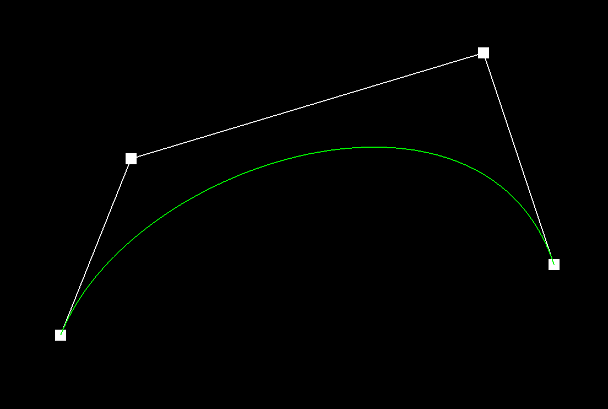
|
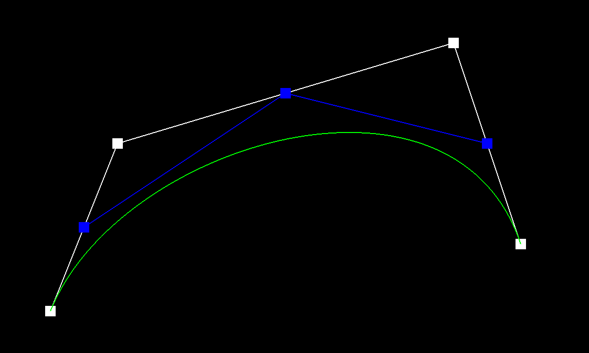
|
|
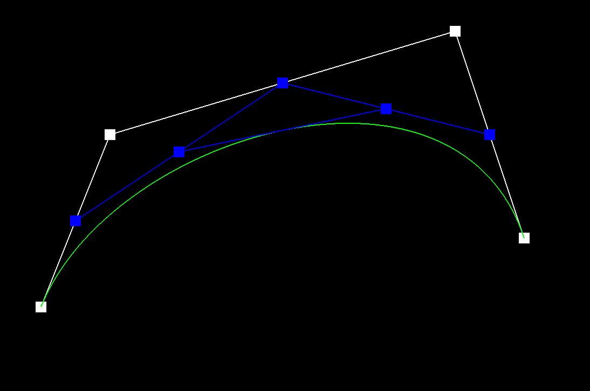
|
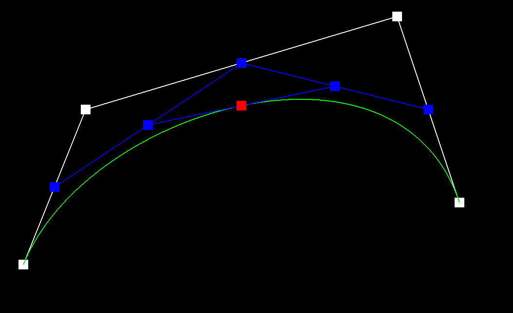
|
Part 2: Bezier surfaces with separable 1D de Casteljau
Extension of de Casteljau Algorithm to Bezier Surfaces
The de Casteljau algorithm extends from curves to surfaces by treating the surface as a separable function of two parameters, \((u, v)\). While a Bezier curve is defined by a 1D array of control points, a Bezier surface is defined by a 2D grid of control points (typically \( 4 \times 4 \) for cubic patches).- Row Interpolation: We first consider each row of control points as a distinct Bezier curve defined by the parameter \( u \). We apply the 1D de Casteljau algorithm to each row using \( u \), which reduces the 2D grid of control points down to a single column of intermediate control points.
- Column Interpolation: We then treat these intermediate points as the control points for a new Bezier curve defined by the parameter \( v \). Applying the 1D de Casteljau algorithm one final time on this column yields the final surface point \( P(u, v) \).
Implementation Details
In my implementation, I reused the logic for the 1D de Casteljau
evaluation (often encapsulated in a helper function like
evaluate1D). The process for evaluating a surface position
was:
- I iterated through the rows of the 4 × 4 control point grid.
-
For each row, I called
evaluate1Dusing the spatial coordinate u. This produced 4 intermediate vectors. - I collected these 4 results into a temporary array.
-
Finally, I called
evaluate1Don this temporary array using the spatial coordinate v to compute the final position and normal of the fragment.
Visualization
Section II: Triangle Meshes and Half-Edge Data Structure
Part 3: Area-weighted vertex normals
Explanation
In order to avoid flat shading and achieve smooth shading across the surface for phong shading, I implemented area-weighted vertex normals. The idea is to compute the normal at each vertex as a weighted average of the normals of the adjacent faces, where the weights are proportional to the areas of those faces. This approach gives more influence to larger faces, resulting in a smoother appearance.Implementation Details
I iterated through the neighboring faces using the standard half-edge circulation (h->twin()->next()). For each face, I accumulated the vector returned by Face::normalUnnormalized(), which relies on the cross-product of edge vectors. Since the magnitude of this cross-product is directly proportional to the face's surface area \( 2 \times \text{Area} \), summing these unnormalized vectors naturally ensures that larger triangles contribute more significantly to the final direction than small sliver triangles. Finally, the accumulated vector is normalized to unit length to serve as the input for Phong shading.Visualization
|
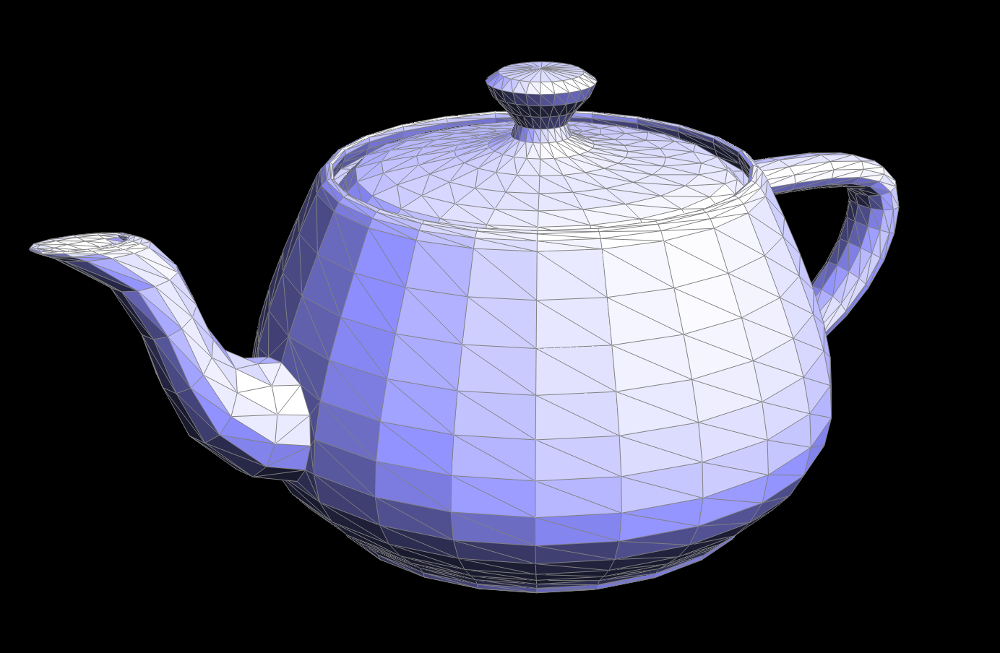
|
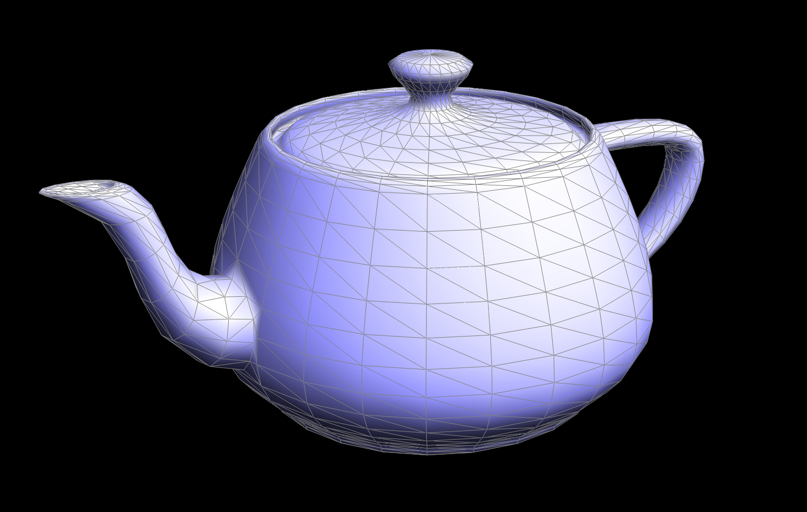
|
Part 4: Edge flip

|
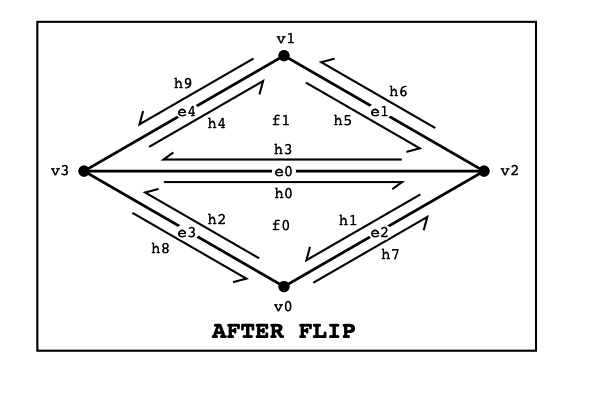
|
Implementation & Debugging
The core of the Edge Flip operation is pointer reassignment. The goal is to transform two adjacent triangles (sharing an edge) into two different triangles by connecting the opposite vertices, without adding or removing any mesh elements.
Implementation Details:
I first check if the edge is a boundary edge; if so, I abort the operation as boundary flips are generally undefined in this context. I then exhaustively retrieve all elements involved: the 2 half-edges of the central edge, the 4 outer half-edges, the 4 vertices, and the 2 faces.
Using the setNeighbors method, I explicitly reassigned the pointers (next, twin, vertex, edge, face) for every affected half-edge. Finally, I updated the halfedge() pointers for the vertices and faces to ensure they point to valid half-edges within the new configuration.
Debugging Journey:
The most effective debugging technique was drawing a detailed diagram of the "before" and "after" states on paper. I labeled every half-edge (h0-h5), vertex (v0-v3), and face. By tracing the intended connectivity on paper first, I could verify that my code's pointer assignments (e.g., `h0->setNeighbors(...)`) matched the diagram perfectly. This prevented cycles and dangling pointers.
Before & After Edge Flips
|
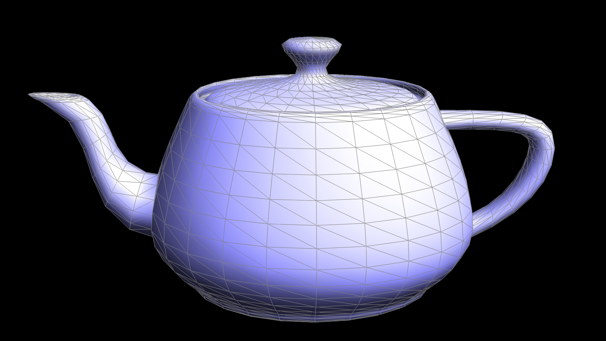
|
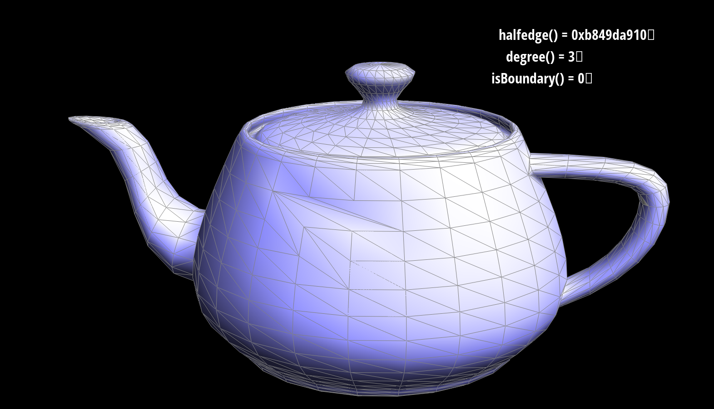
|
Part 5: Edge split
Implementation & Debugging
Edge Split is more complex than flip because it involves allocating new mesh elements.
Implementation Details:
For a given edge, I created a new vertex vnew at its midpoint. I then allocated new edges and half-edges to subdivide the original two triangles into four smaller triangles.
Key steps included:
1. Calculating the position of the new vertex: (v0 + v1) / 2.
2. Marking the new vertex and new edges with isNew = true (crucial for Loop subdivision).
3. Carefully calling setNeighbors to wire up the new internal edges while maintaining the counter-clockwise (CCW) winding order.
My implementation also handles boundary edge splits, where only one face is split into two, though the assignment focuses on internal edges.
Debugging Journey:
Similar to Part 4, diagrams were essential. I paid special attention to the `isNew` flags. During initial testing, I had issues where the mesh would disappear or become distorted; this was usually due to an incorrect `next` pointer creating a loop that excluded a face. Stepping through the pointer assignments and verifying them against my drawing solved these issues.
Visualizations
|
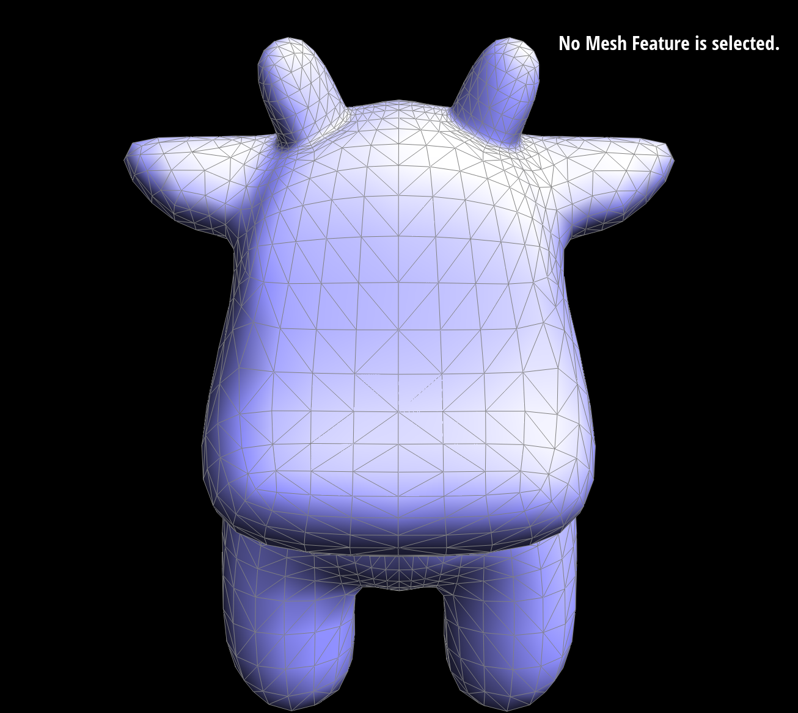
|
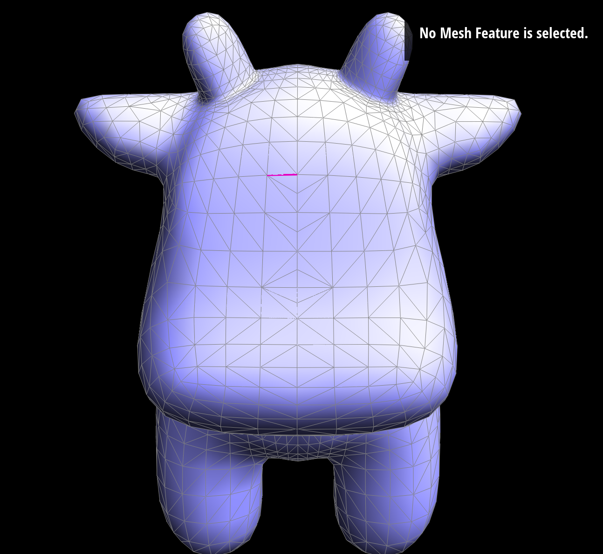
|
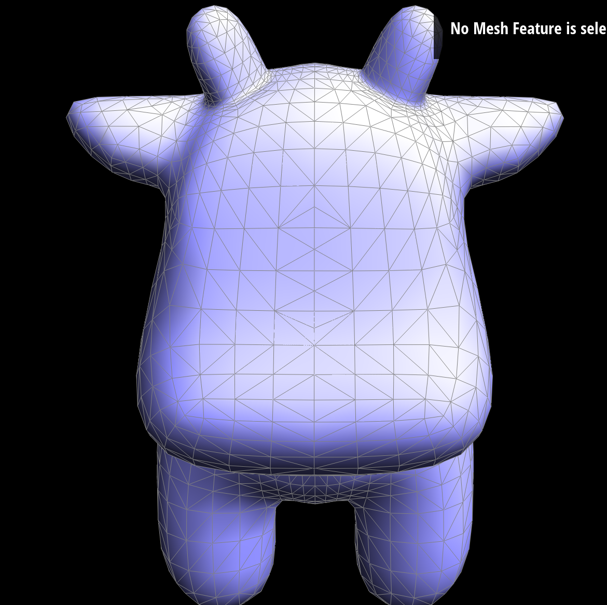
|
Part 6: Loop subdivision for mesh upsampling
Implementation Steps
I implemented Loop Subdivision following the recommended 5-step pipeline:
-
Compute new positions for old vertices: I iterated over all vertices. For internal vertices, I used the loop subdivision rule:
(1 - n*u) * original_position + u * neighbor_sum, wherenis the vertex degree anduis a constant based on degree. I stored this invertex->newPosition. -
Compute positions for new vertices: I iterated over edges to calculate the position for the vertex that will eventually split this edge. The formula weights the two endpoints (3/8) and the two opposite vertices (1/8). This was stored in
edge->newPosition. -
Split edges: I iterated through the original edges (checking
!edge->isNew) and split them. The newly created vertexvnewwas assigned thenewPositioncalculated in step 2. -
Flip edges: I iterated through all edges and flipped any edge that was new (
isNew) and connected an old vertex to a new vertex. This step ensures the topology is regularized. -
Update positions: Finally, I copied
newPositiontopositionfor all vertices to commit the geometric changes.
Observations & Analysis
1. Smoothing of Sharp Corners
Loop subdivision acts as a geometric low-pass filter. Sharp corners and edges lose their definition with each iteration because the new vertex positions are weighted averages of their neighbors. This "averaging" pulls vertices inward, rounding off the mesh. To preserve sharp edges (like on a cube), one can perform "pre-splitting" by adding extra loops of edges near the sharp features. This constrains the averaging effect to a smaller area, keeping the visual edge sharper.
|
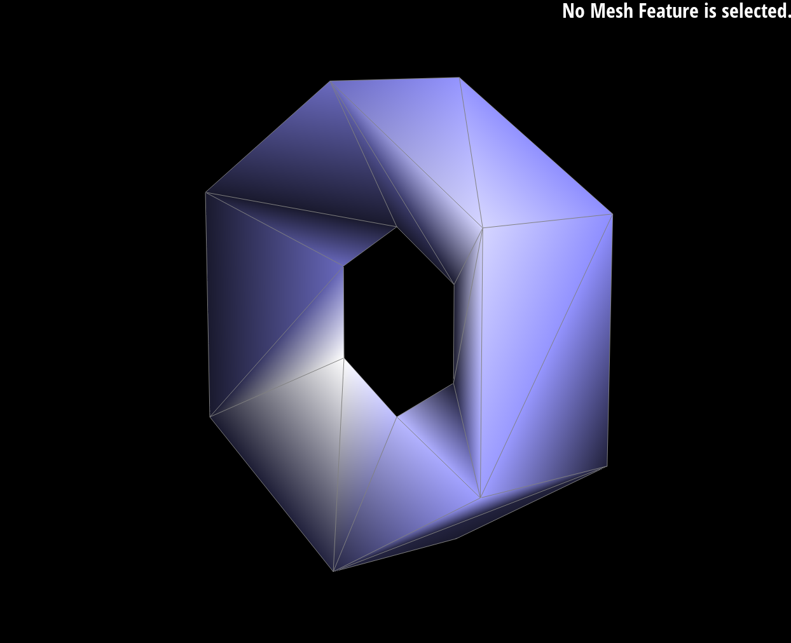
|
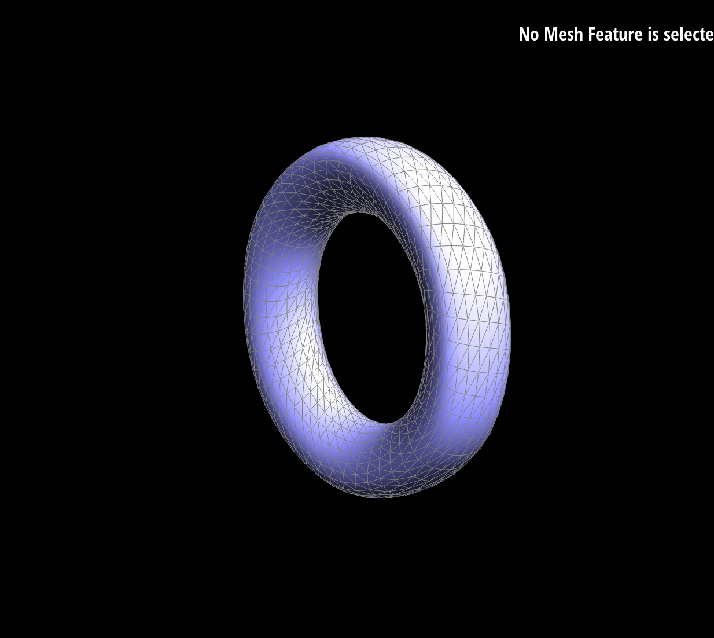
|
2. Cube Asymmetry
When subdividing dae/cube.dae, I noticed the resulting shape became slightly asymmetric.
Reason: The standard cube mesh consists of 6 square faces, each split into 2 triangles by a single diagonal. This topology is not rotationally symmetric; the diagonals bias the subdivision algorithm in specific directions.
Fix: To ensure symmetry, I pre-processed the cube by splitting the diagonal edge of every face. This created an "X" pattern on each face, resulting in 4 triangles per face and a perfectly symmetric topology. Subsequent Loop subdivision on this mesh produced a symmetric, rounded cube.
|
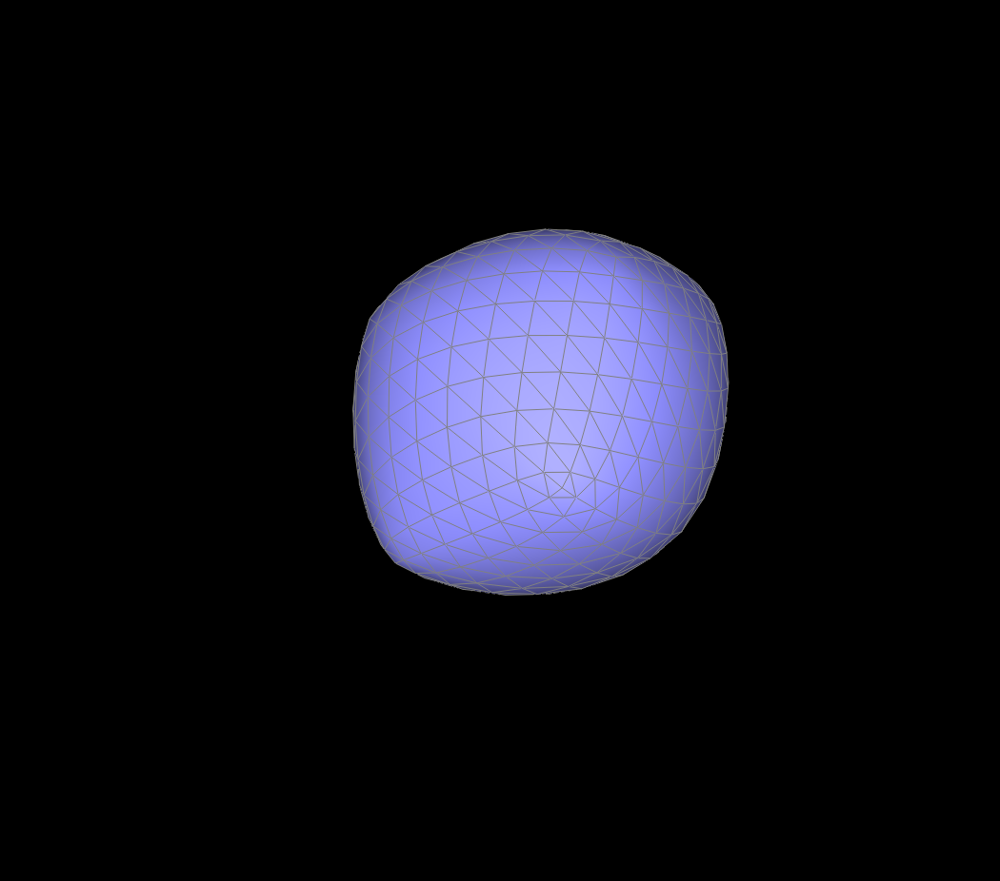
|
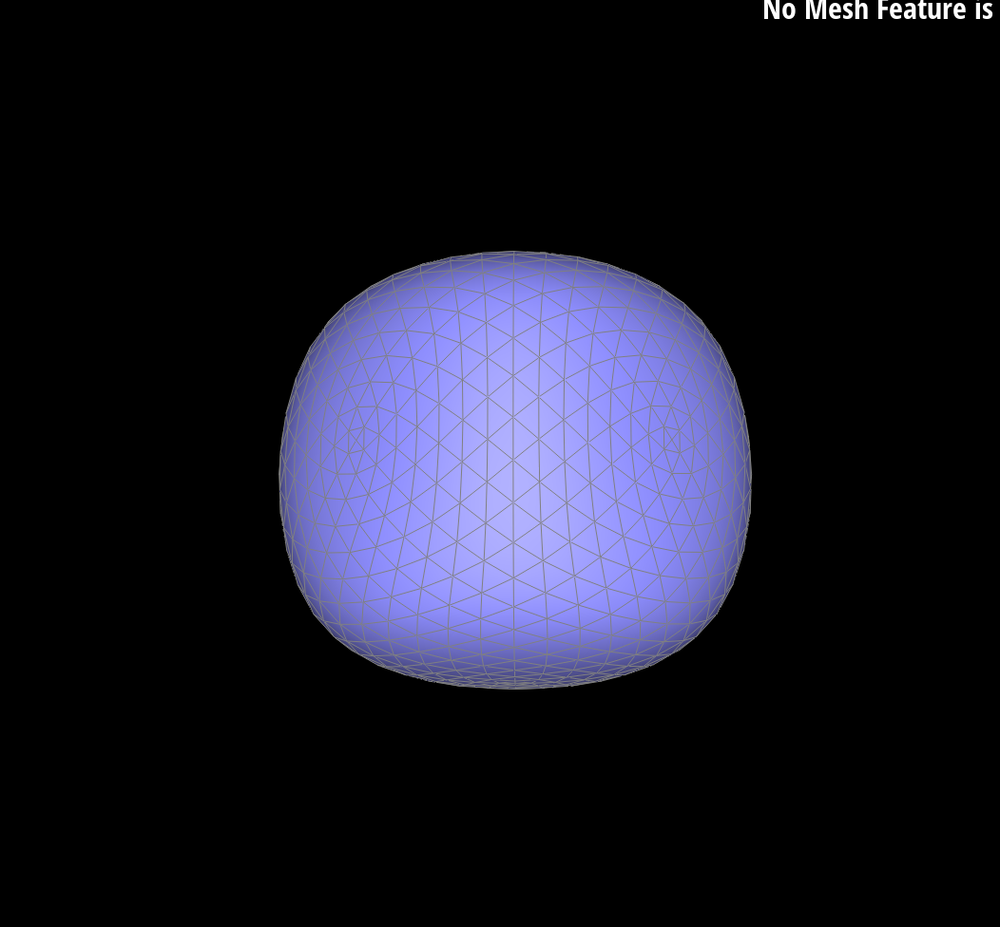
|